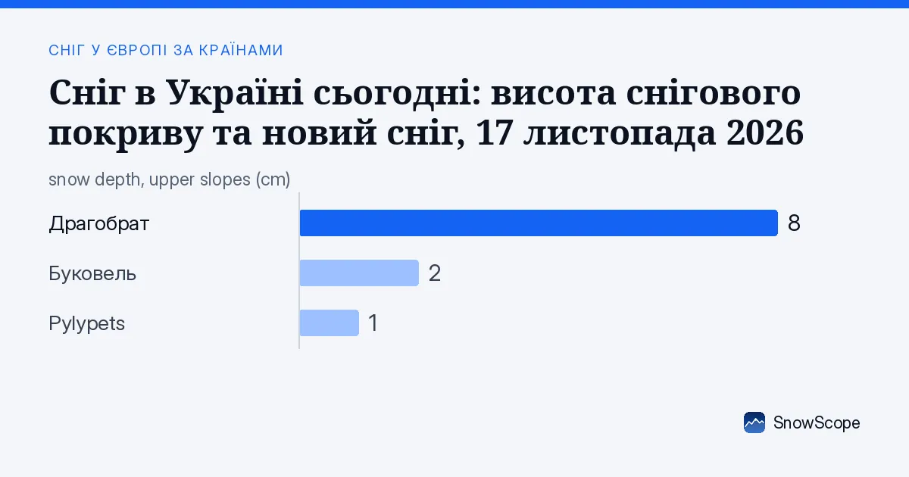

Україна 6% біла, Польща 11%: розділ снігу в Карпатах розширюється
Снігове покриття гірської України різко скоротилось вчора: сьогодні лише 6% високогір'я білого, половина від покриття Польщі за кордоном. Розрив реальний і розширюється, коли відлига з'їдає тонкий шар початку листопада.
Дивіться сніговий прогноз для Драгобрат у застосунку SnowScopeВисота снігу, сповіщення та 3D-карта, безкоштовно.
Чому Україна білішча, ніж свідчить число
Шість відсотків звучить мрачно, але число розповідає лише частину історії. Сніг України зосереджений вище 1500 м, де сьогодні 83% високих вершин білих. Нижче того майже нічого не збереглось. Польські 11% розподілені по власній гірськолижній зоні, тож звучить краще, але маскують схожу залежність від висоти.
Справжній фактор — це відлига минулого тиху. Снігове покриття впало з 5610 км² сім днів тому до 1080 км² сьогодні — втрата 4530 км². Вчора самого зникло 570 км². Така швидкість важлива: вона означає, що сніг, який впав в середині листопада, уже плямистий і тане в голу скелю на нижчих рівнях.
| Country | White | Deepest resort | Next 7 days |
|---|---|---|---|
| Ukraine | 6 % | Драгобрат | 21 cm |
| Romania | 12 % | Havas Bucsin | 21 cm |
| Poland | 11 % | Karpacz | 13 cm |

Перевага сусіда Польщі
Польща випереджає Україну в покритті не завдяки більшому снігу, а завдяки стабільності. Її найкращий курорт Карпач лежить на 44 см, далеко попереду лідера України Драгобрату з 8 см. Цей розрив відбиває і більше опадів на початку сезону, і дещо вищі висоти польських гірськолижних зон.
Румунія, інший сусід України, також перевищує її з 12% білого. Схема по східних Карпатах ясна: відлига найбільш вражає нижчі курорти України, тоді як Польща та Румунія зберігають більше листопадового добутку на своїх вершинах.

Де сніг живе в Україні сьогодні
Три курорти мають гірськолижний сніг на землі прямо зараз: Драгобрат лідирує з 8 см на висоті 1706 м, далі Буковель з 2 см та Пилипець з 1 см. Хребет Боржава домінує в останніх опадах з 12 см за останні три дні, випереджаючи Горгани (11 см) і Чорногору (10 см). Висота — це все: снігова лінія лежить на 1400 м, тож нижче того голо або майже голо.
Лише 260 км² по країні отримали 5 см або більше нового снігу за останні 72 години. Історія українського снігу прямо зараз — це не про масове покриття, а про виживання на високих вершинах.
П'ятниця принесе справжній тест
Модель показує 8 см у п'ятницю 20 листопада як найснігавіший день наступного тижня, з можливістю до 12 см за три дні та 21 см до наступного вівторка. Той свіжий сніг скине гру заново. Україна, Польща та Румунія всі підніматимуть числа свого покриття, коли холодний фронт рухатиметься.
Поки що Україна залишається найсушою з трьох: 6% біла проти 11% Польщі та 12% Румунії. Але до наступної неділі всі три повинні бути набагато більш білими. Ключ в тому, що станеться з тим п'ятничним снігом — чи він залишиться, чи розтане в іншій теплій хвилі.
Що розкривають смуги
Нижче 1000 м майже немає снігу. Між 1000 та 1500 м лише 16% площі вкриті. Стрибок приходить вище 1500 м, де 83% зони біла і середня глибина досягає 4 см. Ця гострая межа показує, що сніг початку сезону в Україні крихкий та обмежений вершинами.
Розподіл Польщі схожої форми, але вищої загальної покриття, що відбиває більше накопленого снігу на всіх висотах. Карпати круті, тож невеликі вертикальні різниці означають великі зміни в виживанні.
Тренд: відновлення наближається
Вчора 570 км² українського снігу зникли за один день. Тренд показує, як Драгобрат займає провідне місце серед інших курортів, оскільки відлига сортувала сніг за висотою. До п'ятниці цей тренд повинен розвернутись: свіжі опади відбудують покриття по всіх трьох країнах, і біла частка України почне взлітати.
Перевіряйте додаток SnowScope для живих оновлень глибини та покриття, коли приходитиме фронт.
Поради лижникам
- Драгобрат зараз утримує найнадійніший сніг в Україні на висоті 1706 м. Очікуйте там 17 см до п'ятниці; це буде найбезпечнішим вибором для гірськолижного спуску на початку наступного тижня.
- Нижче 1500 м скелі та голі ділянки домінують. Залишайтесь на позначених трасах і перевіряйте офіційний бюлетень лавин для Карпат перед поїздкою поза трасу.
- Спостерігайте за вікном відліги цього тижня. Сніг, який впаде в п'ятницю, може ущільнитись або розтаяти, якщо температура знову підніметься. Прогноз 8 см на п'ятницю — це однодневний пік; загальне накоплення за три дні становить лише 12 см.
- До наступного вівторка прогнозується до 21 см по регіону. Це буде поворот. Покриття України підніметься, коли свіжий сніг залишиться та розповсюдиться на нижчі висоти.
- П'ятниця 20 листопада — ваша цільова дата. Найснігавіші умови прийдуть після того, як фронт встановиться.
About these numbers
Resort snow depths are the deepest snow on the resort's upper slopes from the SnowScope snow model (about 1 km, run of 17 листопада); they are estimates for an area, not a measurement at one point. Station values are measurements on the date shown. Forecasts can change. Always read the official avalanche bulletin before going off-piste.
Cite this report
For research, teaching or the press: the numbers and charts are free to reuse under CC BY 4.0 with this citation.
SnowScope (2026), Україна 6% біла, Польща 11%: розділ снігу в Карпатах розширюється, https://snowscope.app/blog/uk/2026/11/ukraine-snow-report-17-november-2026.html, accessed 2026-11-17
SnowScope (Atlas Labs). (2026, November 17). Україна 6% біла, Польща 11%: розділ снігу в Карпатах розширюється. SnowScope snow reports. https://snowscope.app/blog/uk/2026/11/ukraine-snow-report-17-november-2026.html
BibTeX
@misc{snowscope2026ukrainesnowreport17novem,
author = {{SnowScope (Atlas Labs)}},
title = {Україна 6% біла, Польща 11%: розділ снігу в Карпатах розширюється},
year = {2026},
month = nov,
howpublished = {\url{https://snowscope.app/blog/uk/2026/11/ukraine-snow-report-17-november-2026.html}},
note = {Published 2026-11-17 12:53 UTC; accessed 2026-11-17}
}· CC BY 4.0 · Methods, data and tools →
Драгобрат: snow and temperature by height, this winter vs last (tools) →
Follow Драгобрат
Безкоштовно: повідомлення, коли йде новий сніг, і прогноз щоранку.